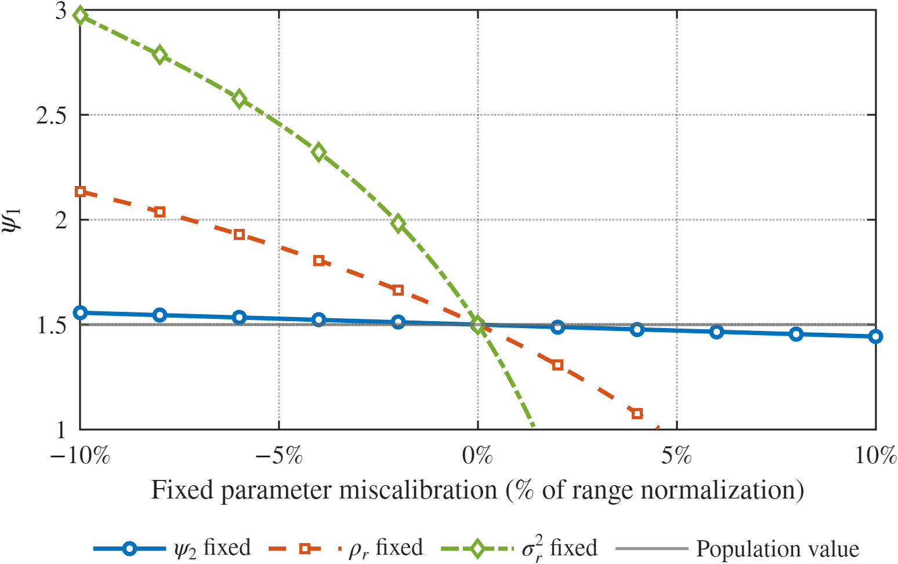

Econometrics | Structural models | Sensitivity analysis
Choosing what to calibrate and what to estimate in structural models.
I am a Ph.D. candidate in Economics at Universidad Carlos III de Madrid. My research develops econometric tools for structural models, with a focus on calibration choices, robustness, and sensitivity of policy-relevant objects.
My job market paper studies the common practice of fixing some structural parameters and estimating the rest. I propose a partition-selection criterion that chooses the calibration- estimation split with the smallest worst-case local bias from calibration error.
Job Market Paper
Choosing What to Calibrate and What to Estimate in Structural Models
Structural models often fix some parameters and estimate the rest, but the calibration- estimation partition is usually chosen by convention. This paper treats that choice as an econometric partition-selection problem.
For each admissible partition, the method constructs a scalar sensitivity statistic measuring the local response of a target object, such as a policy effect, welfare measure, impulse response, or treatment effect, to perturbations of the calibrated parameters.
